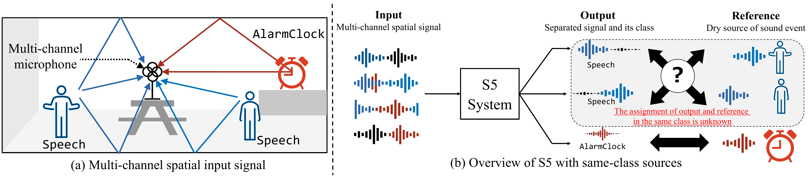

Sound separation and sound event detection in multichannel spatial sound scenes
Description
This Task, Spatial Semantic Segmentation of Sound Scenes (S5), aims to enhance technologies for sound event detection and separation from multi-channel input signals that mix multiple sound events with spatial information. This is a fundamental basis of immersive communication.
First introduced in DCASE 2025 Challenge Task 4, the S5 task continues in DCASE 2026 Task 4 with two key modifications to better reflect real-world conditions:
- Same-class sources: In contrast to DCASE 2025 Task 4, where labels in a mixture are mutually exclusive, DCASE 2026 Task 4 allows multiple sources from the same class to appear simultaneously within a single mixture. Such situations frequently occur in real acoustic environments, for example when multiple people talk simultaneously.
- Zero-target mixtures: A mixture may contain zero target sound events, whereas in DCASE 2025 Task 4 each mixture contained at least one target event. This setting is important for real-world deployments, where systems must operate continuously while target sound events may occur only occasionally. The system must correctly determine when no target events are present, even in the presence of background noise and interference sounds.
This Task requires systems to detect and extract sound events from multi-channel spatial input signals. The input signal contains at most three simultaneous target sound events plus optional multiple non-target sound events and non-directional background noise. Each output signal should contain one isolated target sound event with a predicted label for the event class. The task overview is shown in Fig. 1.

The Task Setting is formulated as follows:
The S5 system receives as input \(\boldsymbol{Y} = [\boldsymbol{y}^{(1)},\dots, \boldsymbol{y}^{(M)}]^\top \in \mathbb{R}^{M \times T}\), which denotes an \(M\)-channel time-domain mixture signal with duration \(T\). The system produces labels of \(K\) target sound events, \(C = (c_1, \dots, c_K)\), together with their associated separated single-channel waveforms measured at a reference microphone, \(S = (\boldsymbol{s}_{c_1},\dots,\boldsymbol{s}_{c_K})\). The mixture at channel \(m\) can be modeled as
where \(\boldsymbol{s}_{c_k}\) and \(\boldsymbol{s}_{c_j}\) denote the target and interfering sound events, respectively; \(\boldsymbol{h}^{(m)}_k\) and \(\boldsymbol{h}^{(m)}_j\) represent their corresponding room impulse responses (RIRs); and \(\boldsymbol{n}^{(m)}\) is the noise signal. We denote the estimated waveforms and labels by \(\hat{S} = (\hat{\boldsymbol{s}}_{\hat{c}_1}, \ldots, \hat{\boldsymbol{s}}_{\hat{c}_{\hat{K}}})\) and \(\hat{C} = (\hat{c}_1, \ldots, \hat{c}_{\hat{K}})\), respectively.
Unlike DCASE 2025 Task 4, the labels in \(C\) and \(\hat{C}\) can be duplicated, and \(K\) can range from \(0\) to \(K_\textrm{max}\), where \(K = 0\) means no target sound event is present in the mixture.
Audio dataset
For DCASE 2026 Task 4, we newly collected isolated target sound events, first-order Ambisonics room impulse responses (RIRs), and background-noise recordings. We combined them with screened recordings from the DCASE 2025 Task 4 dataset and with selected publicly available data. Each mixture is synthesized by convolving target and interference sources with RIRs and adding background noise, as described in Eq. (\ref{eq1}). The mixtures were generated with SpAudSyn, our spatial-audio synthesis tool developed for this task (GitHub).
Compared to the DCASE 2025 Task 4 dataset, the key differences are:
- Mixtures can contain multiple target sources of the same class, with source directions separated by at least 60°.
- Mixtures can contain zero target sound events, containing only background noise and optionally interference sounds.
The list of target sound event classes (18) is:
- "AlarmClock"
- "BicycleBell"
- "Blender"
- "Buzzer"
- "Clapping"
- "Cough"
- "CupboardOpenClose"
- "Dishes"
- "Doorbell"
- "FootSteps"
- "HairDryer"
- "MechanicalFans"
- "MusicalKeyboard"
- "Percussion"
- "Pour"
- "Speech"
- "Typing"
- "VacuumCleaner"
Development set
The development set is divided into three subsets: training, validation, and test.
The training split provides isolated sources, RIRs, background noises, and interference sounds. Mixtures are generated on the fly during training using SpAudSyn. The validation split is distributed with fixed metadata so that the same mixtures can be reconstructed for model selection. The test split consists of fixed synthesized mixtures for local evaluation before submission.
The validation split contains 1,800 mixtures and the test split contains 1,512 mixtures. In both splits, 16.7% of mixtures contain no target sound events, 16.7% contain one target, 33.3% contain two targets, and 33.3% contain three targets. Within the two-target and three-target subsets, 50.0% of mixtures contain multiple same-class target sources.
The components used to construct the dataset are as follows:
- Target sound events: The target pool covers 18 classes. 1,053 new isolated recordings were collected, and 650 recordings from the DCASE 2025 Task 4 dataset were re-screened and retained, resulting in a screened internal pool of 1,703 recordings. These were acquired in an anechoic environment. For the development set, the screened internal recordings were further combined with curated clips from publicly available datasets (FSD50K R1, EARS R2, Semantic Hearing R6).
- Interference sound events: Sound events from classes distinct from the target events, derived from the background set in the dataset of Semantic Hearing R6.
- Room impulse responses: In addition to the RIRs carried over from the DCASE 2025 Task 4 dataset and from FOA-MEIR R3, new first-order Ambisonics RIRs were measured in six rooms with two microphone-array placements per room. For each placement, a loudspeaker was placed every 20° over 18 azimuths on the horizontal plane, at elevations of 0° and ±20°, and at two source-array distances, yielding 1,296 new RIRs in total. The RIRs were recorded with a Sennheiser AMBEO VR Mic and converted to B-format.
- Background noises: Multi-channel diffuse environmental sounds were recorded with the same Sennheiser AMBEO VR Mic and converted to B-format. The recordings cover seven indoor and outdoor locations, with approximately 15 minutes recorded at each location.
All files are in 32 kHz, 16 bit. The mixture duration is 10 seconds. Each mixture contains zero to three target sound events and zero to two interference sound events. The SNR of each target sound event is uniformly sampled between 5 and 20 dB relative to the background-noise level, whereas interference events are mixed at 0 to 15 dB. The maximum number of overlapping events is three. When a mixture contains multiple same-class target sources, the corresponding source directions are separated by at least 60°.
To place the complete set of data, follow the instructions in the dcase2026_task4_baseline.
Evaluation set
The evaluation set was recorded and designed for the Spatial Semantic Segmentation of Sound Scenes (S5) challenge task of the DCASE2026 Challenge. The development set for this dataset is available from the development set download link below.
This dataset comprises 2,567 soundscapes, in which the first 1,512 soundscapes are used for ranking in the DCASE 2026 Challenge Task 4, while the remaining soundscapes are used for task analysis. Each soundscape is a 4-channel audio mixture in Ambisonic FOA B-format (WYZX), 10 seconds long and sampled at 32 kHz/16-bit.
Files eval_0000.wav to eval_1511.wav are used for ranking. Files eval_1512.wav to eval_2566.wav are requested for task analysis.
The dataset includes synthesized soundscapes and real-world recorded soundscapes. The synthesized soundscapes are generated from newly recorded individual sound events, background noise, and FOA room impulse responses (RIRs). Each sound event, including target events from the 18 classes and non-target events, is first convolved with a randomly selected RIR and then mixed to form a soundscape. Multi-channel background noise is also added to each mixture. Each soundscape contains 0 to 3 target sound events and 0 to 2 interference (non-target) sound events. In the real-world subset, audio mixtures are recorded directly using an FOA microphone, the same microphone used to record the RIRs.
Note that, since this dataset is designed for evaluation, it only contains synthesized or recorded soundscapes. It does not include the individual sound events, RIRs, or noise components of the sound scenes.
data | └───eval_set | └───soundscape | | eval_0000.wav | : ... | | eval_2566.wav
External data resources
Based on the past DCASE's external data resource policy, we allow the use of external datasets and trained models under the following conditions:
-
Any test data in both development and evaluation datasets shall not be used for training.
-
Datasets, pre-trained models, and pre-trained parameters on the "List of external data resources allowed" can be used. The List will be updated upon request. Datasets, pre-trained models, and pre-trained parameters, freely accessible by any other research group before May 15, 2026, can be added to the List.
To add sources of external datasets, pre-trained models, or pre-trained parameters to the List, request the organizers by the evaluation set publishing date. We will update the "List of external data resources allowed" on the web page to give an equal opportunity to use them for all competitors. Once the evaluation set is published, no further external sources will be added, and the List will be locked on June 1, 2026.
| Dataset name | Type | Added | Link | Comments |
|---|---|---|---|---|
| YAMNet | model | 01.04.2025 | https://github.com/tensorflow/models/tree/master/research/audioset/yamnet | |
| PANNs: Large-Scale Pretrained Audio Neural Networks for Audio Pattern Recognition | model | 01.04.2025 | https://zenodo.org/record/3987831 | |
| OpenL3 | model | 01.04.2025 | https://openl3.readthedocs.io/ | |
| VGGish | model | 01.04.2025 | https://github.com/tensorflow/models/tree/master/research/audioset/vggish | |
| COLA | model | 01.04.2025 | https://github.com/google-research/google-research/tree/master/cola | |
| BYOL-A | model | 01.04.2025 | https://github.com/nttcslab/byol-a | |
| AST: Audio Spectrogram Transformer | model | 01.04.2025 | https://github.com/YuanGongND/ast | |
| PaSST: Efficient Training of Audio Transformers with Patchout | model | 01.04.2025 | https://github.com/kkoutini/PaSST | |
| BEATs: Audio Pre-Training with Acoustic Tokenizers | model | 01.04.2025 | https://github.com/microsoft/unilm/tree/master/beats | |
| AudioSet | audio, video | 01.04.2025 | https://research.google.com/audioset/ | |
| FSD50K | audio | 01.04.2025 | https://zenodo.org/record/4060432 | eval\_audio shall not be used |
| ImageNet | image | 01.04.2025 | http://www.image-net.org/ | |
| MUSAN | audio | 01.04.2025 | https://www.openslr.org/17/ | |
| DCASE 2018, Task 5: Monitoring of domestic activities based on multi-channel acoustics - Development dataset | audio | 01.04.2025 | https://zenodo.org/record/1247102#.Y_oyRIBBx8s | |
| Pre-trained desed embeddings (Panns, AST part 1) | model | 01.04.2025 | https://zenodo.org/record/6642806#.Y_oy_oBBx8s | |
| Audio Teacher-Student Transformer | model | 01.04.2025 | https://drive.google.com/file/d/1_xb0_n3UNbUG_pH1vLHTviLfsaSfCzxz/view | Includes both ATST-clip and ATST-frame variants. |
| Effective Pre-Training of Audio Transformers for Sound Event Detection | model | 16.05.2025 | https://github.com/fschmid56/PretrainedSED | |
| AudioSep | model | 19.05.2025 | https://github.com/Audio-AGI/AudioSep | |
| AudioSep (checkpoint) | model checkpoint | 19.05.2025 | https://huggingface.co/spaces/Audio-AGI/AudioSep/tree/main/checkpoint | |
| TUT Acoustic scenes dataset | audio | 01.04.2025 | https://zenodo.org/records/45739 | |
| MicIRP | IR | 01.04.2025 | http://micirp.blogspot.com/?m=1 | |
| FOA-MEIR | IR | 01.04.2025 | The data related to the Room IDs of 68, 69, 85, and 86 are in the DEV set. | |
| EARS | Audio | 01.04.2025 | ||
| DISCO | Audio | 01.04.2025 | ||
| ESC-50 | Audio | 01.04.2025 | ||
| SAM-Audio | model checkpoint | 15.05.2026 | ||
| SAM-Audio-Judge | model checkpoint | 15.05.2026 | ||
| Perception Models | model checkpoint | 15.05.2026 | https://github.com/facebookresearch/perception_models | especially PE-A-Frame |
| PSELDNet | model checkpoint | 15.05.2026 | ||
| DaSheng | model checkpoint | 15.05.2026 | https://github.com/XiaoMi/dasheng | |
| Audio-Flamingo 1, 2, 3 | model checkpoint | 15.05.2026 | https://github.com/NVIDIA/audio-flamingo | |
| Qwen-2-Audio(s) | model checkpoint | 15.05.2026 | https://github.com/QwenLM/Qwen2-Audio | |
| Qwen-2.5-Omni(s) | model checkpoint | 15.05.2026 | https://github.com/QwenLM/Qwen2.5-Omni | |
| Qwen-3-Omni(s) | model checkpoint | 15.05.2026 | https://github.com/QwenLM/Qwen3-Omni | |
| Whisper | model checkpoint | 15.05.2026 | https://github.com/openai/whisper | |
| OSWM | model checkpoint | 15.05.2026 | ||
| MATPAC, MATPAC++ | model checkpoint | 15.05.2026 | https://github.com/aurianworld/matpac | |
| TUSS | model checkpoint | 15.05.2026 | https://github.com/merlresearch/unified-source-separation | |
| M2D | model checkpoint | 15.05.2026 | https://github.com/nttcslab/m2d | Masked Modeling Duo |
| M2D-CLAP | model checkpoint | 15.05.2026 | https://github.com/nttcslab/m2d/tree/master/clap | General-purpose audio-language representation |
| M2D-X | model checkpoint | 15.05.2026 | https://github.com/nttcslab/m2d/tree/master/app/icbhi_sprs | Medical applications and further pre-training examples |
| M2D-AS | model checkpoint | 15.05.2026 | https://github.com/nttcslab/m2d/tree/master/audioset | M2D-X specialized in AudioSet |
| M2D-S | model checkpoint | 15.05.2026 | https://github.com/nttcslab/m2d/tree/master/speech | M2D-X specialized in speech |
| MSM-MAE | model checkpoint | 15.05.2026 | https://github.com/nttcslab/msm-mae | Predecessor included in the M2D pre-trained weights list |
| LibriVox | audio | 15.05.2026 | https://librivox.org/ | |
| LibriSpeech | audio | 15.05.2026 | https://www.openslr.org/12/ | |
| FMA | audio | 15.05.2026 | https://github.com/mdeff/fma | |
| VCTK | audio | 15.05.2026 | https://datashare.ed.ac.uk/handle/10283/3443 | |
| DEMAND | audio | 15.05.2026 | https://zenodo.org/records/1227121 | |
| WHAM! noise | audio | 15.05.2026 | https://wham.whisper.ai/ | |
| FUSS | audio | 15.05.2026 | https://zenodo.org/records/3694384 | |
| MUSDB18 | audio | 15.05.2026 | https://sigsep.github.io/datasets/musdb.html | |
| MUSDB-HQ | audio | 15.05.2026 | https://zenodo.org/records/3338373 | |
| MOISESDB | audio | 15.05.2026 | https://github.com/moises-ai/moises-db | |
| Treble10-RIR | room impulse responses | 15.05.2026 | ||
| TAU-SRIR | room impulse responses | 15.05.2026 | https://zenodo.org/records/6408611 | |
| TAU-NIGENS | audio | 15.05.2026 | This include independent data from the NIGENS General Sound Events Database. | |
| 6DOF_SRIRs | room impulse responses | 15.05.2026 | https://zenodo.org/records/6382405 | |
| METU | room impulse responses | 15.05.2026 | https://zenodo.org/records/2635758 | |
| SurrRoom_1.0 | room impulse responses | 15.05.2026 | https://cvssp.org/data/SurrRoom1_0/ | |
| STARSS22 | audio | 15.05.2026 | https://doi.org/10.5281/zenodo.6600531 | |
| STARSS23 | audio, video | 15.05.2026 | https://doi.org/10.5281/zenodo.7880637 | |
| STAIRS26 | audio | 15.05.2026 | https://doi.org/10.5281/zenodo.18171005 | |
| L3DAS21 | audio | 15.05.2026 | https://www.l3das.com/icassp2021 | |
| LADAS22 | audio | 15.05.2026 |
Download
DCASE 2026 S5 development set
This contains sound event source and Room Impulse Response (RIR) files for generating training and validation data, as well as test samples and oracle separation targets for sanity checks of performance.
DCASE 2026 S5 evaluation set
This contains evaluation test mixture samples for the challenge submission. There are 2,567 pre-mixed WAV files.
Task setup and rules
The participants are required to process sound mixtures, identify the sources in the mixture that are in the list of target sound classes defined in the "Audio dataset" section, and output the source signal for each identified source. The number of target sound events in a mixture is [0, 1, 2, or 3], while the number of interference sound events is [0, 1, or 2]. For mixtures containing zero target sound events, the system should output no detected target events and no separated signals. The performance will be evaluated using the class-aware permutation-invariant signal-to-distortion ratio improvement (CAPI-SDRi) metric shown in the "Evaluation metric" section. Some other metrics shown in the "Additional informative metrics" section will also be calculated.
The Task rules are as follows:
- Participants are allowed to submit up to 4 different systems.
- Participants are allowed to use external data for system development.
- Data from other task is considered external data.
- Embeddings extracted from models pre-trained on external data is considered as external data.
- Datasets and models can be added to the list upon request until May 15th (as long as the corresponding resources are publicly available).
- The external dataset used during training should be listed in the YAML file describing the submission.
- Manipulation of provided training data is allowed.
- Participants are not allowed to use audio from the evaluation sets of the following datasets: DISCO, EARS, ESC-50, FSD50K, and Semantic Hearing.
Submission
All participants should submit:
- The ZIP file includes audio files in "*.wav" format containing the results of source separation on the evaluation set (\(EVAL_{test}\)). In addition, the ZIP file should include a JSON file with metadata for the audio outputs and another JSON file containing the calculated scores on the development test set (\(DEV_{test}\)). All files should follow the submission naming conventions.
- A text file contains the Google Drive link of the zip files of the separated audios.
- Metadata for their submission ("*.yaml" file), and
- A technical report for their submission ("*.pdf" file)
We allow up to 4 system output submissions per participant/team. Each system's metadata should be provided in a separate file containing the task-specific information. All files should be packaged into a zip file for submission. Please make a clear connection between the system name in the submitted metadata (the .yaml file), submitted system outputs (the .zip files), and the technical report (the .pdf file). For indicating the connection of your files, you can consider using the following naming convention:
Naming rule for the output (there will also be a bash script that creates the zip file for submission)
Naming rules
└───[Author]_[Affiliation]_task4_[Submission number]_out.zip
└───[Author]_[Affiliation]_task4_[Submission number]_out
├───eval_out
│ ├───eval_0000_[SourceIndex 0]_[EventClass1].wav
│ ├───eval_0000_[SourceIndex 1]_[EventClass2].wav
│ ├───eval_0001_[SourceIndex 0]_[EventClass1].wav
│ └───...
├───eval_results.json
└───dev_set_test_results.json
This information is also available in the example submission package.
The baseline repository provides the generate_waveform.sh script for generating submission-ready ZIP packages, including the results on the development test set and the model outputs on the evaluation set.
See the baseline repository README for an example demonstrating how to generate the baseline system submission packages, Nguyen_NTT_task4_1_out.zip and Nguyen_NTT_task4_2_out.zip.
Evaluation
Evaluation metric
The ranking metric for this task is class-aware permutation-invariant SDRi (CAPI-SDRi), an extension of SDRi designed to jointly evaluate sound event detection and separation.
SDRi (signal-to-distortion ratio improvement) is a standard metric for source separation, but it only measures waveform-level quality and cannot assess whether the system correctly identifies the class labels. To jointly evaluate detection and separation, DCASE 2025 Task 4 adopted class-aware SDRi (CA-SDRi), in which estimated and reference sources are aligned by their class labels: SDRi is computed for true positives (TP), while false positives (FP) and false negatives (FN) receive a fixed penalty of 0 dB. However, in the DCASE 2026 Task 4 setting where multiple sources of the same class can appear in a mixture, CA-SDRi becomes invalid because label-based alignment is ambiguous.
DCASE 2026 Task 4 therefore uses CAPI-SDRi, which extends CA-SDRi by introducing a permutation-invariant objective to resolve the assignment ambiguity between estimated and reference sources sharing the same class label. When all source labels in a mixture are distinct, CAPI-SDRi reduces to CA-SDRi.
The formal definition of CAPI-SDRi is given in the task description paper. Below is an outline of the formulation.
The per-class metric component \(P^{\bar{c}}\) and the mixture-level CAPI-SDRi are defined as:
where the SDRi is calculated as
Here, the number of true positives (TP), false positives (FP), and false negatives (FN) in class \(\bar{c}\) is defined as \(N^{\bar{c}}_{\textrm{TP}}\), \(N^{\bar{c}}_{\textrm{FP}}\), \(N^{\bar{c}}_{\textrm{FN}}\), and their sum is defined as \(N^{\bar{c}}\). \(\mathcal{C}\) and \(\hat{\mathcal{C}}\) denote the sets of unique labels in the reference \(C\) and estimated \(\hat{C}\), respectively. \(\sigma\) and \(\pi\) are the possible index permutations for estimated and reference sources, respectively, and they are chosen to maximize SDRi. This addresses the problem of unknown assignment between the estimation and the reference for same-class sources. \(\mathcal{P}_{\textrm{FN}}\) and \(\mathcal{P}_{\textrm{FP}}\) are penalty values for FN and FP, respectively, both set to \(0\) dB. \(\boldsymbol{y}\) is the waveform at the reference channel of \(\boldsymbol{Y}\). For zero-target mixtures, if an event is detected incorrectly, it will be penalized as FP and the metric is computed normally. When the system correctly predicts silence (i.e., no FP), the metric is undefined since there are no sources to evaluate; such mixtures are excluded from the final averaging. Hence, correctly predicting silence contributes nothing to the score, whereas false predictions are penalized.
The ranking metric is the average CAPI-SDRi across all mixtures.
Additional informative metrics
The following informative metrics will be calculated:
- CASA-SDRi will be reported as an additional joint separation and label prediction score for metric analysis R7. It first performs permutation-invariant source matching before computing classification errors, providing a separation-focused, source-alignment-based analysis.
- PESQ for speech and PEAQ for other signals will be used to provide additional information related to perceptual quality.
- STOI for speech signals.
- Accuracy, Recall, Precision, and F1 score.
Additional example separation results processed by the submitted systems will be shown.
Ranking
The ranking of the systems will be determined with the class-aware permutation-invariant signal-to-distortion ratio improvement (CAPI-SDRi) metric defined in Eq. (\ref{eq3}).
Additional informative results, including PESQ and PEAQ scores and some example separation results (wave files), will be presented but not counted for the Ranking.
Results
This table shows the performance of each team's best-ranked system in the evaluation set. The DCASE 2026 Task 4 baseline is included as a reference. Complete results, supplementary analyses, separated audio examples, and technical reports can be found in the results page.
| Submission Information | Evaluation Set | Test (Development) Set | |||||
|---|---|---|---|---|---|---|---|
| Submission Code | Technical Report |
Official Team Rank |
CAPI-SDRi (eval) | Label Prediction Accuracy (mix) (eval) |
CAPI-SDRi (test) | Label Prediction Accuracy (mix) (test) |
|
| Bando_AIST_task4_3 | /challenge2026/task-spatial-semantic-segmentation-of-sound-scenes-results#Bando_AIST2026;Technical report | 1 | 14.93 | 65.54 | 16.32 | 64.88 | |
| Choi_KAIST_task4_4 | /challenge2026/task-spatial-semantic-segmentation-of-sound-scenes-results#Choi_KAIST2026;Technical report | 2 | 12.98 | 64.88 | 14.65 | 66.07 | |
| Saijo_Mitsubishi_task4_3 | /challenge2026/task-spatial-semantic-segmentation-of-sound-scenes-results#Saijo_Mitsubishi2026;Technical report | 3 | 12.94 | 76.92 | 14.95 | 79.10 | |
| Wang_SRCN_task4_2 | /challenge2026/task-spatial-semantic-segmentation-of-sound-scenes-results#Wang_SRCN2026;Technical report | 4 | 10.13 | 57.80 | 11.74 | 62.23 | |
| Park_SGU_task4_3 | /challenge2026/task-spatial-semantic-segmentation-of-sound-scenes-results#Park_SGU2026;Technical report | 5 | 10.10 | 53.17 | 11.42 | 56.09 | |
| You_PKU_task4_4 | /challenge2026/task-spatial-semantic-segmentation-of-sound-scenes-results#You_PKU2026;Technical report | 6 | 8.24 | 52.58 | 11.85 | 74.87 | |
| Jeong_Medisensing_task4_1 | /challenge2026/task-spatial-semantic-segmentation-of-sound-scenes-results#Jeong_Medisensing2026;Technical report | 7 | 6.97 | 58.53 | 8.98 | 63.09 | |
| Wang_BUPT_task4_2 | /challenge2026/task-spatial-semantic-segmentation-of-sound-scenes-results#Wang_BUPT2026;Technical report | 8 | 6.90 | 56.61 | 8.81 | 61.44 | |
| Deng_WHU_task4_1 | /challenge2026/task-spatial-semantic-segmentation-of-sound-scenes-results#Deng_WHU2026;Technical report | 9 | 6.84 | 58.13 | 8.62 | 61.71 | |
| Baseline_Task4_1c | 10 | 6.77 | 56.55 | 8.17 | 57.14 | ||
| Park_KUBIG_task4_1 | /challenge2026/task-spatial-semantic-segmentation-of-sound-scenes-results#Park_KUBIG2026;Technical report | 11 | 1.18 | 39.81 | 1.20 | 40.28 | |
Baseline system

The task organizers provide a baseline system. The baseline follows a two-stage pipeline: audio tagging (AT) for sound event classification, followed by label-queried source separation (LQSS) using ResUNetK.
Two AT variants are provided:
- M2DAT_1c: operates on single-channel (omnidirectional) input.
- M2DAT_4c: operates on 4-channel first-order Ambisonics (FOA) input, exploiting spatial information at the tagging stage.
Both AT models are based on the Masked Modeling Duo (M2D) framework.
Changes from the DCASE 2025 Task 4 baseline
- Audio tagging output format: The M2DAT model outputs multiple one-hot vectors rather than a single multi-hot vector as in the DCASE 2025 Task 4 baseline. This change supports the detection of multiple same-class sources introduced in the 2026 task.
- 4-channel AT variant: The 2026 baseline introduces the M2DAT_4c variant, which processes 4-channel FOA input to exploit spatial information at the tagging stage.
- Separation model: The separation stage uses ResUNetK. The ResUNetK architecture remains unchanged from the 2025 baseline. The ResUNetK model is trained independently from the AT model, using oracle detection labels as input. The loss function is updated from last year's loss function: using permutation invariant training to resolve ambiguity introduced by the same-class labels. For details, please refer to the baseline system paper.
The official baseline system code is publicly available.
Acknowledgement
This work was partially supported by JST Strategic International Collaborative Research Program (SICORP), Grant Number JPMJSC2306, Japan.
This work was partially supported by the Agence Nationale de la Recherche (Project Confluence, grant number ANR-23-EDIA-0003).
Citation
If you are participating in this Task or using the baseline code, please cite the following papers.
Task description paper
Binh Thien Nguyen, Masahiro Yasuda, Noboru Harada, Romain Serizel, Mayank Mishra, Marc Delcroix, Carlos Hernandez-Olivan, Shoko Araki, Daiki Takeuchi, Tomohiro Nakatani, and Nobutaka Ono. Description and Discussion on DCASE 2026 Challenge Task 4: Spatial Semantic Segmentation of Sound Scenes. 2026. URL: https://arxiv.org/abs/2604.00776, arXiv:2604.00776.
Description and Discussion on DCASE 2026 Challenge Task 4: Spatial Semantic Segmentation of Sound Scenes
Baseline system paper
Binh Thien Nguyen, Masahiro Yasuda, Daiki Takeuchi, Daisuke Niizumi, and Noboru Harada. Class-aware permutation-invariant signal-to-distortion ratio for semantic segmentation of sound scene with same-class sources. In 2026 IEEE International Conference on Acoustics, Speech and Signal Processing (ICASSP). 2026.
Class-Aware Permutation-Invariant Signal-to-Distortion Ratio for Semantic Segmentation of Sound Scene with Same-Class Sources
References
[R1] E. Fonseca, X. Favory, J. Pons, F. Font and X. Serra, "FSD50K: An Open Dataset of Human-Labeled Sound Events," in IEEE/ACM Transactions on Audio, Speech, and Language Processing, vol. 30, pp. 829-852, 2022, doi: 10.1109/TASLP.2021.3133208.
[R2] Julius Richter, Yi-Chiao Wu, Steven Krenn, Simon Welker, Bunlong Lay, Shinji Watanabe, Alexander Richard, Timo Gerkmann, "EARS: An Anechoic Fullband Speech Dataset Benchmarked for Speech Enhancement and Dereverberation," in Proc. Interspeech 2024.
[R3] Masahiro Yasuda, Yasunori Ohishi, Shoichiro Saito, "Echo-aware Adaptation of Sound Event Localization and Detection in Unknown Environments," in IEEE Int. Conf. Acoust. Speech Signal Process. (ICASSP), 2022.
[R4] Karol J. Piczak, "ESC: Dataset for Environmental Sound Classification," In Proceedings of the 23rd ACM International Conference on Multimedia (MM '15). Association for Computing Machinery, New York, NY, USA, 1015–1018, 2015. https://doi.org/10.1145/2733373.2806390
[R5] Furnon Nicolas. 2020. Noise files for the DISCO dataset. (2020). https://github.com/nfurnon/disco.
[R6] Bandhav Veluri, Malek Itani, Justin Chan, Takuya Yoshioka, Shyamnath Gollakota, "Semantic Hearing: Programming Acoustic Scenes with Binaural Hearables," in Proceedings of the 36th Annual ACM Symposium on User Interface Software and Technology, 2023.
[R7] Mayank Mishra, Paul Magron, and Romain Serizel, "Metric Analysis for Spatial Semantic Segmentation of Sound Scenes," arXiv:2511.07075, 2026. https://arxiv.org/abs/2511.07075